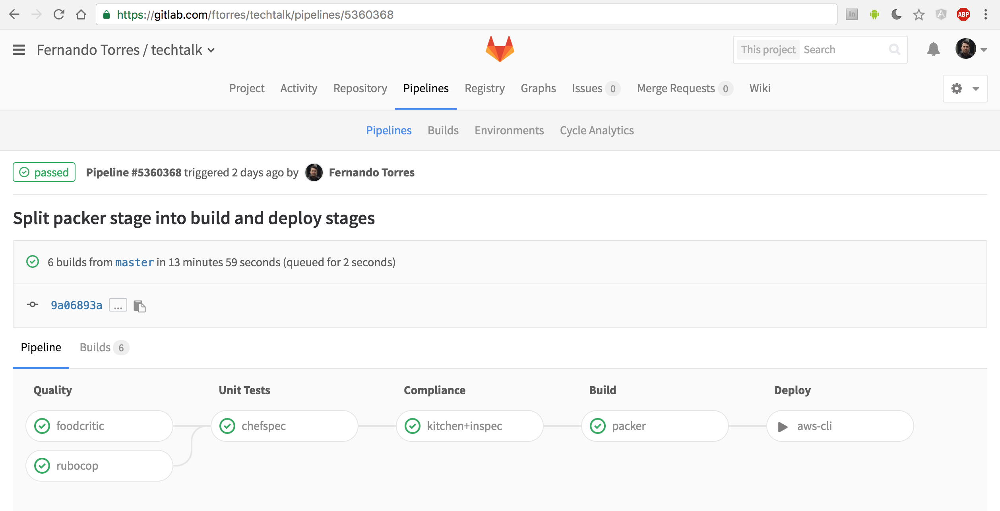

Infrastructure as Code
From Zero to Production
Speaker
Fernando Torres
ftorres@avenuecode.com
Audience
Setting Expectations
- It's not about tools
- It's not about teaching first steps
- It's not about digging theory
- It's all about sharing experiences and arouse curiosity
Immutable Infrastructure
Once you instantiate something, you never change it. Instead, you replace it with another instance to make changes or ensure proper behavior
How to Achieve It
- Automated Infrastructure Tools
- Automated Build Tools
- Automated Delivery Tools
- Code Versioning
Labs
Automated Infrastructure Tools
Pre-requirements
Chef Development Kit


https://downloads.chef.io/chefdk
Prerequisites
Docker Engine

https://docs.docker.com/engine/installation/
Or just
curl -sSL https://get.docker.com/ | sh
Lab 0 - Defining the scope
Lab 1 - Creating a Cookbook
chef quick startLab 2 - Configuring the Kitchen
.kitchen.yml | kitchen.ci | kitchen-dockerLab 3 - Playing with Kitchen
running convergeLab 4 - Acceptance tests
default_test.rbLab 5 - Playing with chefSpec
default_spec.rbCooking a Docker host
-
Recipe
-
Install Docker engine
curl -sSL https://get.docker.com/ | sh
-
Restart Docker service
service docker restart
-
Run the ToDo App container (nandotorres/mean-todo)
docker run -d -p 80:3000 --restart=always nandotorres/mean-todo
Lab 6 - TDD: Failing First
default_spec.rb | chefSpecLab 7 - Fix, Test, Refactory
default.rb |
chef resources
Lab 8 - Quality: Foodcritic
metadata.rb | foodcritic.ioLab 9 - Quality: RuboCop
Gemfile | RuboCopLab 10 - Run acceptance tests
Review
What have we done so far?
- Coded the infrastructure
- Verified the code quality
- Applied BDD and TDD to the code
Labs
Automated Build Tools
Prerequisites
Packer
Get Started
Prerequisites
aws cli

Get Started
Lab 11 - Packer
packer.json | packer_build.sh | amazon-ebs builderReview
What have we done so far?
Automated the process of build and deploy an Ubuntu image to AWS with custom software installed
Labs
Final act: Automated Delivery Tools
GitLab CI
 .gitlab-ci.yml | run_instance.sh | GitLab CI referenceReview
What have we done so far?
- Put our infrastructure in a CI/CD pipeline
- Treat our infrastructure as we treat code